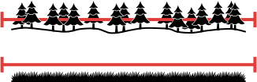

Vzdálenostní analýzy
Ve cvičení se naučíte
-
že "jak daleko od sebe" znamená mnohem více než počet kilometrů mezi místy na mapě
-
jak lze analýzou vzdáleností vytvořit sofistikovanější modely blízkých a vzdálených míst
-
jak aplikovat koncepty analýzy vzdáleností k zodpovězení reálných otázek týkajících se pohybu v krajině
Náplň cvičení
Vzdálenostní analýza pomáhá zodpovědět základní otázku týkající se geografických dat: Jak daleko jsou od sebe různá místa?
"Jak daleko" ovšem může znamenat víc než jen vzdálenost (počet kilometrů mezi body). Analýza může také zohlednit ujetou povrchovou vzdálenost, nutnost obejít překážky nebo náročnost terénu.
Jedná se o analýzu rastrovou, proto je vhodná pro modelování pohybu po povrchu (po krajině). Druhým (vektorovým) typem vzdálenostích analýz jsou pak tzv. analýzy síťové (součástí budoucího cvičení).
Faktory ovlivňující analýzu (vstupní data)
-
Pozice zdroje (1 a více)
Body (pixely), z jejichž pozic probíhá výpočet

-
Překážky (Barriers)
Struktury blokující cestu, neumožňují průchod
například zdi, řeky, dálnice, státní hranice apod.

-
Povrchová vzdálenost (Surface Distance)
Započítává nerovnosti povrchu Země (reliéf), trasa pak lépe odpovídá skutečné uražené vzdálenosti. Použití se hodí, pokud nás zajímá kromě tvaru trasy i její skutečná délka.

-
Náklady (Cost, Friction)
Rozlišuje prostupnost rastru ve smyslu nákladů, hodnota pixelu znamená obtížnost (náklady) jeho překročení
například Land Cover, sklonitost terénu nebo nadm. výška, ale i cena výkupu pozemků, cena za překročení hranice.

Dalšími vstupními činiteli mohou být tzv. horizontální nebo vertikální faktor. Tyto parametry mění náklady trasy v závislosti na směru pohybu, konkrétně:
-
Horizontální faktor (Horizontal Factor):
Mění náklady v závislosti na azimutu směřujícímu k dalšímu pixelu. Ideální k započítání směru větru do výpočtu obtížnosti (nákladů) trasy.
-
Vertikální faktor (Vertical Factor):
Mění náklady v závislosti na úhlu sklonu terénu, řídí se funkcí (lineární, trigonometrickou apod.) nebo tabulkou hodnot. Ideální k rozlišení nákladů do kopce a z kopce.
Poznámka
Při použití těchto dvou faktorů už analýzy závisí na směru trasy (tam ≠ zpět) a je proto vhodné dát pozor na nastavení parametru Travel direction – Travel from source × Travel to source (od zdroje × ke zdroji)
Doplňkové parametry:
- Initial accumulation nastaví zdrojovému bodu počáteční hodnotu nákladů, se kterou cesta z něj začíná
- Maximum accumulation maximální hodnota kumulovaných nákladů, místa s vyššími náklady (pro daný zdrojový bod) budou mít hodnotu
Null - Multiplier to apply to costs hodnota, kterou se vynásobí náklady každého pixelu, lze použít např. k rozlišení různých druhů dopravy
Poznámka
Při výběru konkrétních nákladů je vždy nutné správně vyhodnotit jednotlivé parametry. Vliv jednotlivých faktorů se může případ od případu výrazně lišit.
například:
- Bariéra pro člověka nemusí znamenat bariéru pro zvíře
- Les pohyb člověka zpomaluje, ale zvířata ho mohou naopak preferovat
- Povrchová vzdálenost se nemusí vztahovat na ptáky nebo letadla
Jednotlivé faktory mohou mít v analýze také odlišnou váhu, viz níže.
Analýzy
Pro analýzy vzdálenosti lze použít tři základní metody:
Distance Accumulation
Každému pixelu přiřazuje hodnotu obtížnosti (součet nákladů) dosažení (jednoho) zdrojového bodu.
například oblast potenciální polohy ztraceného člověka v čase od poslední známé polohy
Distance Allocation
Každému pixelu přiřazuje zdrojový bod, ke kterému vede nejsnadnější cesta (dle součtu nákladů).
například přiřazení nejbližšího záchranného zařízení, nebo mapování zvířecích teritorií
Path Generation
Generuje cestu s nejnižšími náklady mezi dvěma (a více) body.
například pohyb zvířat mezi zdroji potravy, nebo stavba cesty v krajině
Metoda Distance Accumulation
Pro každý pixel vypočítá kumulovanou vzdálenost (součet nákladů) k nejbližšímu zdroji. Distance Accumulation je základním nástrojem pro vzdálenostní analýzy a jeho výstupy bývají nutným vstupním parametrem některých navazujících nástrojů.
Poznámka
Do analýzy je možné započítat všechny výše zmíněné faktory.
příklady použití: identifikace odlehlých oblastí (daleko od stanic záchranné služby)
Předchozí metoda každému pixelu přiřadila náklady na cestu k nejbližšímu zdroji, ale neřekne nám, který zdroj je tím nejbližším. To dokáže metoda druhá:
Metoda Distance Allocation
Každému pixelu přiřadí hodnotu zdroje, ke kterému vede nejméně nákladná cesta. V případě, že zadáme pouze nutné vstupní parametry (zdrojové body), bude se nástroj řídit pouze 2D vzdáleností a vytvoří tzv. Thiessenovy polygony (také Voronoiovy diagramy).
příklady použití: určení záchranného týmu nejblíže nouzové události
Metoda Optimal Path As Line
Nalezne spojnice bodů s nejnižsím součtem nákladů. Nutným vstupem jsou dva rastry vzniklé nástrojem Distance Accumulation ( Output distance accumulation raster a Out back direction raster )
Příklady nejkratších tras:


{kind=link}
{kind=link}
{kind=link}
{kind=link}
{kind=link}
{kind=link}
{kind=link}
{kind=link}
{kind=link}
{kind=link}
{kind=link}
{kind=link}
Úlohy k procvičení
Úlohy
K řešení následujích úloh použijte datovou sadu ArcČR
500 verzi 3.3 dostupnou na disku S ve složče
K155\Public\data\GIS\ArcCR500 3.3.
-
Ve které obci Ústeckého kraje je největší plocha území v okolí komunikací 1.tříd, kde hrozí možnost sesuvů (poměr sklon_v_procentech / vzdálenost_od_komunikace je větší než 0.3 jednotek) okolního terénu do anebo od komunikace. Jaká je výměra tohoto území?
-
Najděte optimální trasu pro přesun dřeva lesem z místa těžby (výšková kóta OBJECTID 765 - Hradišťany) na odvozová místa u cest (obec Lukov a Želkovice v Ústeckém kraji). Jaké jsou časové vzdálenosti pro nejkratší nalezené cesty?
Podmínky:
- trasa nesmí vést po svahu o sklonu větším jak 15 stupňů
- přesun po území se sklonem 0-5 stupňů zabere 1 časovou jednotku
- přesun po území se sklonem 5-10 stupňů zabere 4 časové jednotky
- přesun po území se sklonem 10-15 stupňů zabere 16 časových jednotek
-
Jaká je délka nalazených tras po terénu v metrech mezi místem těžby a dvěma odvozovými místy vypočítaných v předchozím příkladě?
-
Kolik procent území v okolí do vzdálenosti 10km od chemického závodu Lovochemie (GPS: 50.5098247N, 14.0741761E) by bylo zasaženo znečištěním větším než 30 jednotek za předpokladu, že se toto znečištění šíří podle vzorce (d je vzdálenost v metrech od zdroje, prostorové rozlišení 10m). Zasahuje takto znečištěné území vodní plochy?
-
Jaká je nejkratší časová vzdálenost mezi výškovou kótou 'Varhošť' (ID 725) a 'Sklářský vrch' (ID 476)? Na území, kde je sklon svahu do 0,5° je rychlost pohybu 6 km/h, kde je sklon 0,5-1° je rychlost 4 km/h, kde je sklon 1-5° je rychlost 1 km/h, kde je sklon nad 5° není možné se pohybovat. Vertikální parametry neuvažujte. Výsledek uveďte v minutách?
-
Jaká je průměrná hodnota hluku (na 3 des. místa) od silnic pro území Moravskoslezského kraje? Hluk se šíří od všech silnic podle vzorce (100/d), kde d je přímá vzdálenost od nejbližší silnice?